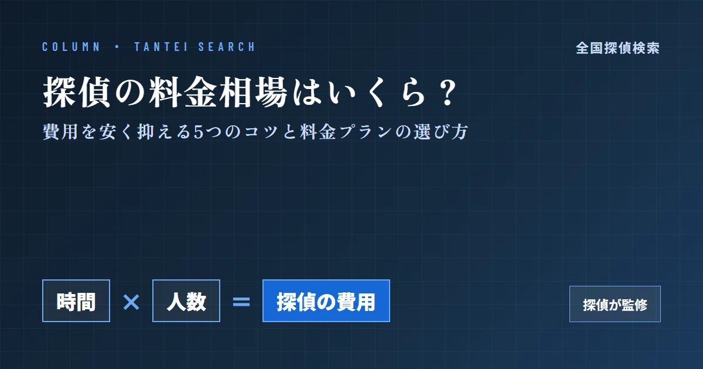
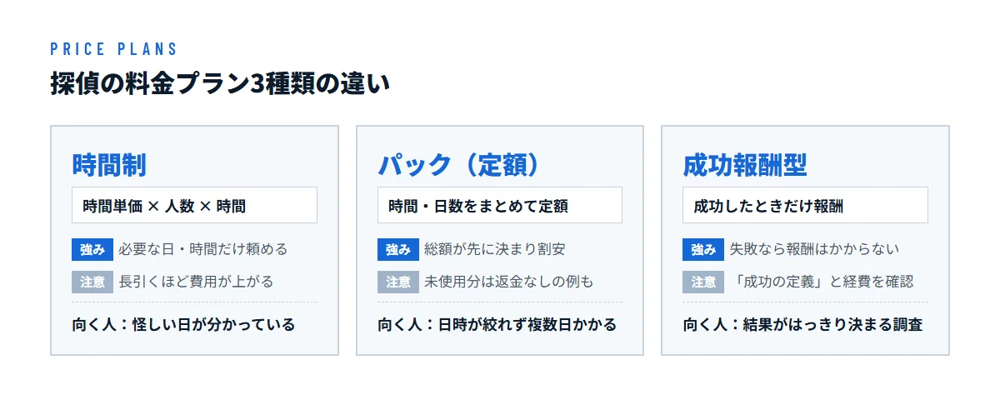

探偵の料金相場はいくら？費用を安く抑える5つのコツと料金プランの選び方


この記事は探偵が監修しています
監修：佐藤 良太（ラクーン探偵社 代表（合同会社EXE RESEARCH））
「探偵に頼みたいけれど、いくらかかるのか分からない」「高額な請求をされたらどうしよう」。探偵への相談をためらう理由として、もっとも多いのが費用の不安です。
探偵の料金は、決して不透明なものではありません。仕組みはシンプルで、調査にかかる「時間」と「人数」でほぼ決まります。この仕組みと料金プランの違いを知っておけば、必要以上に払うことも、安さにつられて失敗することも防げます。
この記事では、現役の探偵の視点から、料金プランの種類、調査内容別の相場、費用をなるべく安く抑える5つのコツ、そして契約前に確かめたい探偵の届出番号の調べ方を解説します。
探偵の主な料金プラン3種類
探偵の料金プランは、大きく「時間制」「パック（定額）」「成功報酬型」の3種類に分かれます。どれが一番安いかは、調査の内容と、対象者の行動がどれだけ読めているかで変わります。

時間制（タイムチャージ）
「調査員1名×1時間あたりいくら」で計算する、もっとも基本的なプランです。尾行や張り込みは2名以上で行うのが一般的なので、実際の金額は「時間単価×人数×時間」になります。
- メリット：必要な日・時間だけ依頼できる。「金曜の夜だけ」など、日時が絞れていれば総額を低くできる
- デメリット：調査が長引くと費用も上がり続ける。車両費や機材費が別にかかることが多い
パック（定額）プラン
「20時間でいくら」「3日間でいくら」のように、あらかじめ時間や日数をまとめて買うプランです。同じ時間を時間制で頼むより割安に設定されているのが一般的です。
- メリット：総額が最初に決まるので予算を立てやすい。複数日にわたる調査では割安になる
- デメリット：早く証拠が取れても、使わなかった時間分が返金されない契約もある。延長時の料金も確認が必要
成功報酬型プラン
「調査が成功したときだけ報酬を払う」プランです。一見もっとも安全に見えますが、契約前の確認が一番大切なプランです。
- メリット：結果が出なければ報酬はかからない
- デメリット：成功したときの報酬は高めに設定されやすい。着手金や経費は成否に関わらずかかることが多い
特に注意したいのが、「何をもって成功とするか」です。たとえば浮気調査で「対象者が異性と会ったら成功」という契約だと、裁判で使える証拠が取れていなくても報酬が発生します。成功の定義は必ず契約書で確認してください。
調査内容別の費用相場（目安）
代表的な2つの調査の相場は、次のとおりです。幅が大きいのは、調査にかかる日数と人数が依頼ごとにまったく違うためです。
- 浮気・不倫調査
- 30万〜80万円程度
接触する日を絞れているか、何回分の証拠が必要か
- 人探し・家出調査
- 20万〜80万円程度
手がかりの量、いなくなってからの経過日数、範囲の広さ
浮気・不倫調査
浮気調査は、依頼がもっとも多い調査です。離婚や慰謝料請求で使うなら、一般的にはラブホテルや相手の自宅への出入りを複数回押さえる必要があり、その分日数がかかります。
費用のイメージをつかむために、計算例を示します。
計算例
調査員2名・1名あたり1時間8,000円の事務所に、5時間×4日を依頼した場合
8,000円×2名×20時間＝32万円（ここに車両費・交通費などの経費が加わります）
このように、費用は「時間×人数」で積み上がります。逆に言えば、時間か人数を減らせれば費用は下がります。
人探し・家出調査
人探しは、手がかりの量で費用が大きく変わります。最後に住んでいた場所、勤務先、交友関係などが分かっていれば、短期間で見つかることもあります。一方、家出から時間がたっている場合や、手がかりが少ない場合は、調査範囲が広がり費用も上がります。未成年の家出など急ぐケースでは、警察への届出と並行して早めに相談することが、結果的に費用を抑えることにもつながります。
探偵費用をなるべく安く抑える5つのコツ
費用が「時間×人数」で決まる以上、節約の基本は無駄な調査時間を減らすことです。ここでは、依頼者が自分でできる5つのコツを紹介します。
① 対象者の事前情報をできるだけ自分で集めておく
対象者の顔写真、勤務先、車の車種とナンバー、よく行く場所などをまとめておきましょう。これらを調べるための調査が不要になり、その分の時間を削れます。ただし、スマホを勝手に見る、尾行するといった行為は、トラブルや警戒を招くので避けてください。
② 調査する日時をピンポイントで絞り込む
もっとも効果が大きいのがこのコツです。「毎週金曜は帰りが遅い」「出張が多い」などの行動パターンが分かれば、可能性の高い日だけに調査を集中できます。何も起きない日に払う費用が減り、証拠が取れる確率も上がります。
③ 複数社で相見積もりをとり比較する
同じ調査でも、事務所によって見積もりは大きく違います。2〜3社に相談して、次の点を並べて比べましょう。
- 調査員の人数と、調査の日数・時間
- 車両費・機材費・交通費などの経費が含まれているか
- 報告書の内容（写真や映像の有無）
総額だけを比べると、人数や時間が少ないだけの見積もりが安く見えてしまうので注意してください。
④ 面談時に追加料金の有無を必ず確認する
料金トラブルの多くは、契約後の追加請求から生まれます。面談では、次のような質問をしておくと安心です。
- 調査を延長するときは、いくらかかるか
- 深夜・早朝・遠方での割増しはあるか
- 対象者が入った店の飲食代や駐車場代は誰が負担するか
- 途中で解約した場合の精算方法
答えは口頭だけでなく、契約書に書かれているかまで確認しましょう。
⑤ 自分の目的に合ったプランを選ぶ
プラン選びを間違えると、同じ調査でも支払額は変わります。
- 時間制：怪しい日が分かっていて、短時間で済みそうなとき
- パックプラン：日時が絞れず、複数日の調査が必要なとき
- 成功報酬型：結果がはっきり定義できる調査（所在の特定など）で、成功の条件が明確なとき
迷ったら、面談で「自分のケースだとどのプランが一番安くなりますか」と率直に聞いてみましょう。複数のプランで試算してくれる事務所は、信頼できる判断材料のひとつになります。
料金を比べる前に、探偵の「届出番号」を調べる
見積もりを比べる前に、まず確認してほしいのが探偵業の届出番号です。探偵業を営むには、営業所のある都道府県の公安委員会に届出をする必要があり、届出をした業者には8桁の届出番号があります。まっとうな業者なら、ホームページや事務所に番号を表示しています。
届出番号は、料金面でも大切です。届出をした探偵業者は、契約の前に「重要事項説明書」を使って、料金や解約の条件を書面で説明しなければなりません。契約後には、料金が書かれた契約書も交付されます。つまり、届出をした業者を選べば、口約束だけの不透明な料金で契約させられる心配が減るのです。
- ホームページや見積書に、届出番号と届出先の公安委員会が書かれているか
- 面談で、料金を書面で説明してくれるか
- 契約書の料金が、面談で聞いた金額と一致しているか
探偵の届出番号の調べ方
届出番号は、次のような方法で調べられます。相見積もりをとる業者は、すべて確かめておくと安心です。
- 業者のホームページを見る：会社概要やページの下部に、「○○県公安委員会 第○○○○○○○○号」のように書かれているのが一般的です。
- 面談で届出証明書を見せてもらう：届出をした業者には、公安委員会から届出証明書が交付されています。
- 「全国探偵検索」で業者名を検索する：届出をしている探偵業者を、業者名や都道府県から検索できます。
ホームページに届出番号がどこにもなく、聞いてもはぐらかす業者は、料金がいくら安くても避けた方が無難です。
届出番号の読み方や、番号を使った業者の見分け方は、「探偵業の届出番号とは？8桁の読み方と、失敗しない探偵の選び方」で詳しく解説しています。
まとめ：安さより「適正価格」で選ぶ
探偵の費用は、調査の「時間」と「人数」で決まります。事前情報を集め、日時を絞り、目的に合ったプランを選べば、費用は大きく抑えられます。
ただし、相場より極端に安い業者には注意が必要です。安さの裏には、次のような事情があることが少なくありません。
- 本来2名以上必要な尾行を1名で行い、対象者を見失う
- 機材や経験が足りず、顔も分からないような写真しか撮れない
- 基本料金を安く見せて、あとから経費や延長料金を上乗せする
証拠が取れずにやり直しになれば、結局は高くつきます。大切なのは、一番安い業者ではなく、料金の内訳をきちんと説明してくれる業者を選ぶことです。
「全国探偵検索」では、公安委員会に届出をしている探偵業者を、業者名や都道府県から検索できます。お住まいの地域から複数の事務所を見つけて、相見積もりに役立ててください。
全国7,554件の届出業者から、業者名や地域で探偵事務所を探せます。
全国探偵検索で探す →